3.1. Cross-validation: 评估 estimator 的性能¶
Learning the parameters of a prediction function and testing it on the
same data is a methodological mistake: a model that would just repeat
the labels of the samples that it has just seen would have a perfect
score but would fail to predict anything useful on yet-unseen data.
This situation is called overfitting.
To avoid it, it is common practice when performing
a (supervised) machine learning experiment
to hold out part of the available data as a test set X_test, y_test.
Note that the word “experiment” is not intended
to denote academic use only,
because even in commercial settings
machine learning usually starts out experimentally.
(学习一个预测函数的参数并且在相同的数据集上测试结果，在方法论上是不正确的：
一个仅给出测试用例标签的模型将会获得极高的分数，但是这个模型对没有见到过的数据，
则无法做出任何预测。这种情况称为 overfitting 过拟合。
为了避免这种情况，在（监督）学习实验中，通常会将一部分数据独立出来作为 测试集合 X_test, y_test。
注意，“实验”不仅仅具有学术的意义，因为对于大部分商业系统，通常也是从实验性的系统开始的。)
In scikit-learn a random split into training and test sets
can be quickly computed with the train_test_split helper function.
Let’s load the iris data set to fit a linear support vector machine on it (
在 scikit-learn 中，可以使用辅助函数 train_test_split 快速地将数据划分为训练集合与测试结合。
下面加载 iris 数据集并用它来拟合一个线性支持向量机):
>>> import numpy as np
>>> from sklearn import cross_validation
>>> from sklearn import datasets
>>> from sklearn import svm
>>> iris = datasets.load_iris()
>>> iris.data.shape, iris.target.shape
((150, 4), (150,))
We can now quickly sample a training set while holding out 40% of the data for testing (evaluating) our classifier (我们可以快速的采样到一个训练集合同时保留 40% 的数据用于测试（评估）我们的分类器):
>>> X_train, X_test, y_train, y_test = cross_validation.train_test_split(
... iris.data, iris.target, test_size=0.4, random_state=0)
>>> X_train.shape, y_train.shape
((90, 4), (90,))
>>> X_test.shape, y_test.shape
((60, 4), (60,))
>>> clf = svm.SVC(kernel='linear', C=1).fit(X_train, y_train)
>>> clf.score(X_test, y_test)
0.96...
When evaluating different settings (“hyperparameters”) for estimators,
such as the C setting that must be manually set for an SVM,
there is still a risk of overfitting on the test set
because the parameters can be tweaked until the estimator performs optimally.
This way, knowledge about the test set can “leak” into the model
and evaluation metrics no longer report on generalization performance.
To solve this problem, yet another part of the dataset can be held out
as a so-called “validation set”: training proceeds on the training set,
after which evaluation is done on the validation set,
and when the experiment seems to be successful,
final evaluation can be done on the test set.
(当评价估计器 (estimators) 不同的设置（“超参数”）时，比如 SVM 中必须人工设定 C, 这时候在**测试集合上**依然有过拟合的风险，
因为这个参数会被扭曲直到估计器获得最佳的性能。这时候，测试集合的内容会被“泄露”到模型中，评价指标不再能够反映出范化的性能。
为了解决这个问题，数据集中的另一部分数据被保留出来，称之为“验证集合”：在训训练集合上训练，之后再验证集合上评估，完成实验后，
最终在测试集合上进行评价。)
However, by partitioning the available data into three sets, we drastically reduce the number of samples which can be used for learning the model, and the results can depend on a particular random choice for the pair of (train, validation) sets. (然而，将可用的数据分为三个部分后，可以用于模型训练的样例数量被大大降低了，而且结果会受到随机选择的（训练，验证）集合的影响。)
A solution to this problem is a procedure called cross-validation (CV for short). A test set should still be held out for final evaluation, but the validation set is no longer needed when doing CV. In the basic approach, called k-fold CV, the training set is split into k smaller sets (other approaches are described below, but generally follow the same principles). The following procedure is followed for each of the k “folds”(一个用于解决这个问题的方法称为 cross-validation （CV 是简称）。 测试数据集任然会保留出来用于最终的评价，但是验证集合在进行 CV 时不再需要。 基本的方法称之为 k-fold CV （k 折叠交叉验证），训练数据被分为 k 个小的集合（其他方法会在下面描述，主要原则基本相同）。 下面的步骤会在每个 k “folds” 上重复):
- A model is trained using 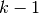 of the folds as training data; (使用 个 folds 作为训练数据训练一个模型。)
- the resulting model is validated on the remaining part of the data (i.e., it is used as a test set to compute a performance measure such as accuracy). (得到的模型会在剩下的数据上验证（比如：将会作为一个测试集合来衡量性能，如精确度）。
The performance measure reported by k-fold cross-validation is then the average of the values computed in the loop. This approach can be computationally expensive, but does not waste too much data (as it is the case when fixing an arbitrary test set), which is a major advantage in problem such as inverse inference where the number of samples is very small. (由 k-fold 交叉验证得到性能指标是循环中各个值的平均值。这个方法的计算代价很高，但不会浪费很多的数据（这种情况下仅有一个固定的测试集合）， 在一些问题如反向推断 (inverse inference) 中， 比较有优势。)
3.1.1. Computing cross-validated metrics 计算交叉验证指标¶
The simplest way to use cross-validation is to call the
cross_val_score helper function on the estimator and the dataset.
(最简单的使用 cross-validation 的方式是在估计器和数据集上调用 cross_val_score 的帮助函数。)
The following example demonstrates how to estimate the accuracy of a linear kernel support vector machine on the iris dataset by splitting the data, fitting a model and computing the score 5 consecutive times (with different splits each time)(下面的例子演示了如何评估一个线性支持向量机在 iris 数据集上的精度，通过划分数据，可以连续5次,使用不同的划分方法 拟合并评分):
>>> clf = svm.SVC(kernel='linear', C=1)
>>> scores = cross_validation.cross_val_score(
... clf, iris.data, iris.target, cv=5)
...
>>> scores
array([ 0.96..., 1. ..., 0.96..., 0.96..., 1. ])
The mean score and the 95% confidence interval of the score estimate are hence given by(平均分数和具有 95% 置信区间的分数估计给出如下):
>>> print("Accuracy: %0.2f (+/- %0.2f)" % (scores.mean(), scores.std() * 2))
Accuracy: 0.98 (+/- 0.03)
By default, the score computed at each CV iteration is the score
method of the estimator. It is possible to change this by using the
scoring parameter(默认地，每次 CV 迭代获得的分数由估计器的 score 函数计算得到。可以通过分数参数来改变计算方式如下):
>>> from sklearn import metrics
>>> scores = cross_validation.cross_val_score(clf, iris.data, iris.target,
... cv=5, scoring='f1_weighted')
>>> scores
array([ 0.96..., 1. ..., 0.96..., 0.96..., 1. ])
See The scoring parameter: defining model evaluation rules for details. In the case of the Iris dataset, the samples are balanced across target classes hence the accuracy and the F1-score are almost equal. (注意 The scoring parameter: defining model evaluation rules 的细节。 在 Iris 数据集的情况下，各个分类的样例数目是比较均衡的，因而精度和 F1-scoree 基本相同。)
When the cv argument is an integer, cross_val_score uses the
KFold or StratifiedKFold strategies by default, the latter
being used if the estimator derives from ClassifierMixin.
(当 cv 参数是一个整数时，cross_val_score 默认地使用 KFold 或者 StratifiedKFold 策略，
后者会在估计器衍生自 ClassifierMixin 时使用。)
It is also possible to use other cross validation strategies by passing a cross validation iterator instead, for instance(也可以通过传入一个交叉验证迭代器来使用其他的交叉验证策略，比如):
>>> n_samples = iris.data.shape[0]
>>> cv = cross_validation.ShuffleSplit(n_samples, n_iter=3,
... test_size=0.3, random_state=0)
>>> cross_validation.cross_val_score(clf, iris.data, iris.target, cv=cv)
...
array([ 0.97..., 0.97..., 1. ])
Data transformation with held out data
Just as it is important to test a predictor on data held-out from training, preprocessing (such as standardization, feature selection, etc.) and similar data transformations similarly should be learnt from a training set and applied to held-out data for prediction(在保 留的数据上测试预测器时，预处理（比如标准化，特征选择等） data transformations 也应该是和训练数据集相同的):
>>> from sklearn import preprocessing
>>> X_train, X_test, y_train, y_test = cross_validation.train_test_split(
... iris.data, iris.target, test_size=0.4, random_state=0)
>>> scaler = preprocessing.StandardScaler().fit(X_train)
>>> X_train_transformed = scaler.transform(X_train)
>>> clf = svm.SVC(C=1).fit(X_train_transformed, y_train)
>>> X_test_transformed = scaler.transform(X_test)
>>> clf.score(X_test_transformed, y_test)
0.9333...
A Pipeline makes it easier to compose
estimators, providing this behavior under cross-validation(Pipeline
使得组合估计器变得十分简单，在 cross-Validation 下使用如下):
>>> from sklearn.pipeline import make_pipeline
>>> clf = make_pipeline(preprocessing.StandardScaler(), svm.SVC(C=1))
>>> cross_validation.cross_val_score(clf, iris.data, iris.target, cv=cv)
...
array([ 0.97..., 0.93..., 0.95...])
3.1.1.1. Obtaining predictions by cross-validation 通过交叉验证获得预测¶
The function cross_val_predict has a similar interface to
cross_val_score, but returns, for each element in the input, the
prediction that was obtained for that element when it was in the test set. Only
cross-validation strategies that assign all elements to a test set exactly once
can be used (otherwise, an exception is raised).(
除了返回结果不同，函数 cross_val_predict 具有和 cross_val_score 相同的接口，
对于每一个输入的元素，如果其在测试集合中，将会得到预测结果。交叉验证策略会将可用的元素提交到测试集合有且仅有一次（否则会抛出一个异常）。)
These prediction can then be used to evaluate the classifier(这些预测可以用于评价分类器的效果):
>>> predicted = cross_validation.cross_val_predict(clf, iris.data,
... iris.target, cv=10)
>>> metrics.accuracy_score(iris.target, predicted)
0.966...
Note that the result of this computation may be slightly different from those
obtained using cross_val_score as the elements are grouped in different
ways.(注意，这个计算的结果和 cross_val_score 有轻微的差别，因为后者用另一种方式组织元素。)
The available cross validation iterators are introduced in the following section.(可用的交叉验证迭代器在下面的部分中。)
3.1.2. Cross validation iterators 交叉验证迭代器¶
The following sections list utilities to generate indices that can be used to generate dataset splits according to different cross validation strategies.(接下来的部分列出了一些用于生成索引标号，用于在不同的交叉验证策略中生成数据划分的工具。)
3.1.2.1. K-fold¶
KFold divides all the samples in  groups of samples,
called folds (if 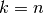, this is equivalent to the Leave One
Out strategy), of equal sizes (if possible). The prediction function is
learned using
groups of samples,
called folds (if 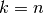, this is equivalent to the Leave One
Out strategy), of equal sizes (if possible). The prediction function is
learned using  folds, and the fold left out is used for test.
(
folds, and the fold left out is used for test.
(KFold 将所有的样例划分为 个组，称为折叠 (fold) （如果 ，
这等价于 Leave One Out 留一 策略），都具有相同的大小（如果可能）。预测函数学习时使用
个折叠中的数据，最后一个剩下的折叠会用于测试。)
Example of 2-fold cross-validation on a dataset with 4 samples(在 4 个样例的数据集上使用 2-fold 交叉验证的例子):
>>> import numpy as np
>>> from sklearn.cross_validation import KFold
>>> kf = KFold(4, n_folds=2)
>>> for train, test in kf:
... print("%s %s" % (train, test))
[2 3] [0 1]
[0 1] [2 3]
Each fold is constituted by two arrays: the first one is related to the training set, and the second one to the test set. (每个折叠由两个数组组成，第一个作为 training set，另一个作为 test set。) Thus, one can create the training/test sets using numpy indexing(由此，可以通过使用 numpy 的索引创建训练/测试集合):
>>> X = np.array([[0., 0.], [1., 1.], [-1., -1.], [2., 2.]])
>>> y = np.array([0, 1, 0, 1])
>>> X_train, X_test, y_train, y_test = X[train], X[test], y[train], y[test]
3.1.2.2. Stratified k-fold 分层 k-fold¶
StratifiedKFold is a variation of k-fold which returns stratified
folds: each set contains approximately the same percentage of samples of each
target class as the complete set.(StratifiedKFold 是 k-fold 的变种，会返回 分层 的折叠：每个小集合中，
各个类别的样例比例大致和完整数据集中相同。)
Example of stratified 3-fold cross-validation on a dataset with 10 samples from two slightly unbalanced classes(在有10个样例的，有两个略不均衡类别的数据集上进行分层 3-fold 交叉验证的例子):
>>> from sklearn.cross_validation import StratifiedKFold
>>> labels = [0, 0, 0, 0, 1, 1, 1, 1, 1, 1]
>>> skf = StratifiedKFold(labels, 3)
>>> for train, test in skf:
... print("%s %s" % (train, test))
[2 3 6 7 8 9] [0 1 4 5]
[0 1 3 4 5 8 9] [2 6 7]
[0 1 2 4 5 6 7] [3 8 9]
3.1.2.3. Label k-fold 标签 k-fold¶
LabelKFold is a variation of k-fold which ensures that the same
label is not in both testing and training sets. This is necessary for example
if you obtained data from different subjects and you want to avoid over-fitting
(i.e., learning person specific features) by testing and training on different
subjects.(LabelKFold 也是一个 k-fold 的变种，他会保证相同的 label 不会同时属于测试和训练集合。
在有些情况下这是有必要的，比如你从不同的主题获取数据，而且在不同的主题上测试和训练（比如，学习个人的特殊特征）时你要避免过拟合。)
Imagine you have three subjects, each with an associated number from 1 to 3(设想你有三个主题，依次对应着 1 到 3):
>>> from sklearn.cross_validation import LabelKFold
>>> labels = [1, 1, 1, 2, 2, 2, 3, 3, 3, 3]
>>> lkf = LabelKFold(labels, n_folds=3)
>>> for train, test in lkf:
... print("%s %s" % (train, test))
[0 1 2 3 4 5] [6 7 8 9]
[0 1 2 6 7 8 9] [3 4 5]
[3 4 5 6 7 8 9] [0 1 2]
Each subject is in a different testing fold, and the same subject is never in both testing and training. Notice that the folds do not have exactly the same size due to the imbalance in the data.(每一个主题在不同的测试折叠中，而且相同的主题不会 同时出现在测试训练的数据集中。注意，这些折叠并不含有相同的尺寸，因为数据是不均衡的。)
3.1.2.4. Leave-One-Out - LOO 留一¶
LeaveOneOut (or LOO) is a simple cross-validation. Each learning
set is created by taking all the samples except one, the test set being
the sample left out. Thus, for  samples, we have different
training sets and different tests set. This cross-validation
procedure does not waste much data as only one sample is removed from the
training set(
samples, we have different
training sets and different tests set. This cross-validation
procedure does not waste much data as only one sample is removed from the
training set(LeaveOneOut (或者 LOO) 是一个简单的交叉验证。每个学习的集合由一个单独的训练样例组成，测试
集合是最后一个剩余的训练样例。因此，对于 个样例，我们有 个不同的训练集合和
个不同的测试集合。因为只有一个训练样例被保留出来，因而交叉验证不会浪费过多的数据):
>>> from sklearn.cross_validation import LeaveOneOut
>>> loo = LeaveOneOut(4)
>>> for train, test in loo:
... print("%s %s" % (train, test))
[1 2 3] [0]
[0 2 3] [1]
[0 1 3] [2]
[0 1 2] [3]
Potential users of LOO for model selection should weigh a few known caveats.
When compared with -fold cross validation, one builds models
from samples instead of models, where 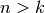.
Moreover, each is trained on 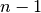 samples rather than
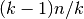. In both ways, assuming is not too large
and 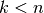, LOO is more computationally expensive than -fold
cross validation.(使用 LOO 进行模型选择时，应当注意一些已知的警告。和 -fold 交叉验证比较，
one 会从 个样例中构建
个模型，而当 时 -fold 仅会构建 个模型。
更重要的是，一个在 个样例上训练，而另一个在 个样例上训练。
这两种方式，假设 不会很大，而且 ， LOO 的计算复杂度比 -fold 更高。)
In terms of accuracy, LOO often results in high variance as an estimator for the
test error. Intuitively, since of
the samples are used to build each model, models constructed from
folds are virtually identical to each other and to the model built from the
entire training set.(在精确度方面，LOO 经常会得到一个测试误差的方差比较高的估计器。
直观的，由于 个样例中的 个都用于训练，
构建模型的 folds 和用全部数据类构建模型是比较相似的。)
However, if the learning curve is steep for the training size in question, then 5- or 10- fold cross validation can overestimate the generalization error. (然而，如果问题中的学习曲线 (learning curve) 相对于训练数据集大小的曲线比较陡峭，那么 5- 或者 10- 的折叠验证会导致泛化误差过拟合。)
As a general rule, most authors, and empirical evidence, suggest that 5- or 10- fold cross validation should be preferred to LOO.(一般的规则，大部分作者， 和经验证据都表明 5- 或者 10- 的折叠交叉验证要好于 LOO。)
References:
- http://www.faqs.org/faqs/ai-faq/neural-nets/part3/section-12.html
- T. Hastie, R. Tibshirani, J. Friedman, The Elements of Statistical Learning, Springer 2009
- L. Breiman, P. Spector Submodel selection and evaluation in regression: The X-random case, International Statistical Review 1992
- R. Kohavi, A Study of Cross-Validation and Bootstrap for Accuracy Estimation and Model Selection, Intl. Jnt. Conf. AI
- R. Bharat Rao, G. Fung, R. Rosales, On the Dangers of Cross-Validation. An Experimental Evaluation, SIAM 2008
- G. James, D. Witten, T. Hastie, R Tibshirani, An Introduction to Statistical Learning, Springer 2013
3.1.2.5. Leave-P-Out - LPO¶
LeavePOut is very similar to LeaveOneOut as it creates all
the possible training/test sets by removing  samples from the complete
set. For samples, this produces 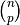 train-test
pairs. Unlike
samples from the complete
set. For samples, this produces 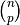 train-test
pairs. Unlike LeaveOneOut and KFold, the test sets will
overlap for 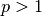.(LeavePOut 和 LeaveOneOut 非常相似，其通过从完整的集合中移动 个样例
创建了所有可能的训练/测试集合。对于 个样例，这会产生 个训练-测试对。
不同于 LeaveOneOut 和 KFold，当 时，测试集合会重叠。)
Example of Leave-2-Out on a dataset with 4 samples(在有 4 个样例的数据集上使用 Leave-2-Out 的例子):
>>> from sklearn.cross_validation import LeavePOut
>>> lpo = LeavePOut(4, p=2)
>>> for train, test in lpo:
... print("%s %s" % (train, test))
[2 3] [0 1]
[1 3] [0 2]
[1 2] [0 3]
[0 3] [1 2]
[0 2] [1 3]
[0 1] [2 3]
3.1.2.6. Leave-One-Label-Out - LOLO¶
LeaveOneLabelOut (LOLO) is a cross-validation scheme which holds out
the samples according to a third-party provided array of integer labels. This
label information can be used to encode arbitrary domain specific pre-defined
cross-validation folds.(LeaveOneLabelOut (LOLO) 是一个交叉验证的方法，通过第三方提供的一个整数标签数组来
保留样例。这个标签信息可以用于编码任意领域的特殊预定义交叉验证折叠。)
Each training set is thus constituted by all the samples except the ones related to a specific label.(每一个训练集合由除去某个特别标签之外的所有其他样例组成。)
For example, in the cases of multiple experiments, LOLO can be used to create a cross-validation based on the different experiments: we create a training set using the samples of all the experiments except one(例如，在多次试验中，LOLO 可以给 不同的实验创建特定的交叉验证：我们创建一个训练集合使用除去某个实验之外所有实验的样例):
>>> from sklearn.cross_validation import LeaveOneLabelOut
>>> labels = [1, 1, 2, 2]
>>> lolo = LeaveOneLabelOut(labels)
>>> for train, test in lolo:
... print("%s %s" % (train, test))
[2 3] [0 1]
[0 1] [2 3]
Another common application is to use time information: for instance the labels could be the year of collection of the samples and thus allow for cross-validation against time-based splits.(另一种通常的使用场景是基于时间信息： 比如按照年份采样的集合，通过基于时间的划分来进行交叉验证。)
Warning
Contrary to StratifiedKFold , ** the labels of
LeaveOneLabelOut should not encode the target class to predict ** :
the goal of StratifiedKFold is to rebalance dataset classes across
the train / test split to ensure that the train and test folds have
approximately the same percentage of samples of each class while
LeaveOneLabelOut will do the opposite by ensuring that the samples
of the train and test fold will not share the same label value.(和 StratifiedKFold 不同，
** LeaveOneLabelOut 的标签不应该使用用于预测的类型信息来进行编码 ** ：
StratifiedKFold 的目标是对训练/测试集合中的数据类型进行均衡化，保证训练和测试集合中样例的类型比例比较接近，
而 LeaveOneLabelOut 是做相反的事，即保证训练和测试集合不会共享相同的标签数值。)
3.1.2.7. Leave-P-Label-Out¶
LeavePLabelOut is similar as Leave-One-Label-Out, but removes
samples related to 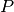 labels for each training/test set.(LeavePLabelOut
和 Leave-One-Label-Out 类似，但在每个训练/测试集合对中会保留 个标签的数据作为验证集。)
Example of Leave-2-Label Out:
>>> from sklearn.cross_validation import LeavePLabelOut
>>> labels = [1, 1, 2, 2, 3, 3]
>>> lplo = LeavePLabelOut(labels, p=2)
>>> for train, test in lplo:
... print("%s %s" % (train, test))
[4 5] [0 1 2 3]
[2 3] [0 1 4 5]
[0 1] [2 3 4 5]
3.1.2.8. Random permutations cross-validation a.k.a. Shuffle & Split¶
The ShuffleSplit iterator will generate a user defined number of
independent train / test dataset splits. Samples are first shuffled and
then split into a pair of train and test sets.(ShuffleSplit 迭代器
将会生成一个用户给定数量的独立的训练/测试数据划分。样例首先被打散然后划分为一对训练测试集合。)
It is possible to control the randomness for reproducibility of the
results by explicitly seeding the random_state pseudo random number
generator. (可以通过设定明确的 random_state，使得伪随机生成器的结果可以重复。)
Here is a usage example:
>>> ss = cross_validation.ShuffleSplit(5, n_iter=3, test_size=0.25,
... random_state=0)
>>> for train_index, test_index in ss:
... print("%s %s" % (train_index, test_index))
...
[1 3 4] [2 0]
[1 4 3] [0 2]
[4 0 2] [1 3]
ShuffleSplit is thus a good alternative to KFold cross
validation that allows a finer control on the number of iterations and
the proportion of samples in on each side of the train / test split.
(ShuffleSplit 可以替代 KFold 交叉验证，因为其提供了细致的训练 / 测试划分的
数量和样例所占的比例等的控制。)
3.1.2.9. Label-Shuffle-Split 标签随机划分¶
The LabelShuffleSplit iterator behaves as a combination of
ShuffleSplit and LeavePLabelsOut, and generates a
sequence of randomized partitions in which a subset of labels are held
out for each split. (LabelShuffleSplit 迭代器是 ShuffleSplit 和 LeavePLabelsOut
的组合，他生成一个随机划分的序列，将同一标签的元素分散到各个划分中。)
Here is a usage example:
>>> from sklearn.cross_validation import LabelShuffleSplit
>>> labels = [1, 1, 2, 2, 3, 3, 4, 4]
>>> slo = LabelShuffleSplit(labels, n_iter=4, test_size=0.5,
... random_state=0)
>>> for train, test in slo:
... print("%s %s" % (train, test))
...
[0 1 2 3] [4 5 6 7]
[2 3 6 7] [0 1 4 5]
[2 3 4 5] [0 1 6 7]
[4 5 6 7] [0 1 2 3]
This class is useful when the behavior of LeavePLabelsOut is
desired, but the number of labels is large enough that generating all
possible partitions with labels withheld would be prohibitively
expensive. In such a scenario, LabelShuffleSplit provides
a random sample (with replacement) of the train / test splits
generated by LeavePLabelsOut.(当需要 LeavePLabelsOut 的操作时，class 信息是必要的，
但是当需要为所有可能的 P labels 保留划分的 labels 数量会很大，保存会有很大代价。在这种情况下，
LabelShuffleSplit 通过 LeavePLabelsOut
提供了一个随机（可重复）的训练 / 测试划分采样。)
3.1.2.10. Predefined Fold-Splits / Validation-Sets 预定义 交叉划分 / 验证集合¶
For some datasets, a pre-defined split of the data into training- and
validation fold or into several cross-validation folds already
exists. Using PredefinedSplit it is possible to use these folds
e.g. when searching for hyperparameters.(对一些数据集，一个预定义的，将数据划分为训练和验证集合或者划分为几个交叉验证集合的划分已经存在。
可以使用 PredefinedSplit 来使用这些集合来搜索超参数。)
For example, when using a validation set, set the test_fold to 0 for all
samples that are part of the validation set, and to -1 for all other samples.
(比如，当使用验证集合时，设置所有验证集合中的样例的 test_fold 为0，而将其他样例设置为 -1.)
3.1.2.11. See also 其他资料¶
StratifiedShuffleSplit is a variation of ShuffleSplit, which returns
stratified splits, i.e which creates splits by preserving the same
percentage for each target class as in the complete set.(StratifiedShuffleSplit 是 ShuffleSplit 的一个变种，会返回直接的划分，比如：
创建一个划分，但是划分中每个类的比例和完整数据集中的相同。)
3.1.3. A note on shuffling 打乱顺序的说明¶
If the data ordering is not arbitrary (e.g. samples with the same label are contiguous), shuffling it first may be essential to get a meaningful cross- validation result. However, the opposite may be true if the samples are not independently and identically distributed. For example, if samples correspond to news articles, and are ordered by their time of publication, then shuffling the data will likely lead to a model that is overfit and an inflated validation score: it will be tested on samples that are artificially similar (close in time) to training samples.(如果数据的顺序不是任意的（比如说，相同标签的样例连续出现），为了获得有意义的交叉验证结果，首先对其进行 打散是很有必要的。然而，当样例不是独立同分布时打散则是不可行的。例如：样例是相关的文章，以他们发表的时间 进行排序，这时候如果对数据进行打散，将会导致模型过拟合，得到一个过高的验证分数：因为验证样例更加相似（在时间上更接近） 于训练数据。)
Some cross validation iterators, such as KFold, have an inbuilt option
to shuffle the data indices before splitting them. Note that(一些交叉验证迭代器，
比如 KFold，有一个内建的在划分数据前进行数据索引打散的选项。注意):
- This consumes less memory than shuffling the data directly. (这种方式仅需要很少的内存就可以打散数据。)
- By default no shuffling occurs, including for the (stratified) K fold cross-
validation performed by specifying
cv=some_integertocross_val_score, grid search, etc. Keep in mind thattrain_test_splitstill returns a random split. (默认不会进行打散，包括设置cv=some_integer（直接）k 折叠交叉验证的cross_val_score， 表格搜索等。注意train_test_split会返回一个随机的划分。) - The
random_stateparameter defaults toNone, meaning that the shuffling will be different every timeKFold(..., shuffle=True)is iterated. However,GridSearchCVwill use the same shuffling for each set of parameters validated by a single call to itsfitmethod. (参数random_state默认设置为None，这意为着每次进行KFold(..., shuffle=True)时，打散都是不同的。 然而，GridSearchCV通过调用fit方法验证时，将会使用相同的打散来训练每一组参数。) - To ensure results are repeatable (on the same platform), use a fixed value
for
random_state. (为了保证结果的可重复性（在相同的平台上），应该给random_state设定一个固定的值。)
3.1.4. Cross validation and model selection 交叉验证和模型选择¶
Cross validation iterators can also be used to directly perform model selection using Grid Search for the optimal hyperparameters of the model. This is the topic if the next section: Grid Search: Searching for estimator parameters. (交叉验证迭代器可以通过网格搜索得到最优的模型超参数，从而直接用于模型的选择。 这是另一部分 section: Grid Search: Searching for estimator parameters 的主要内容。)